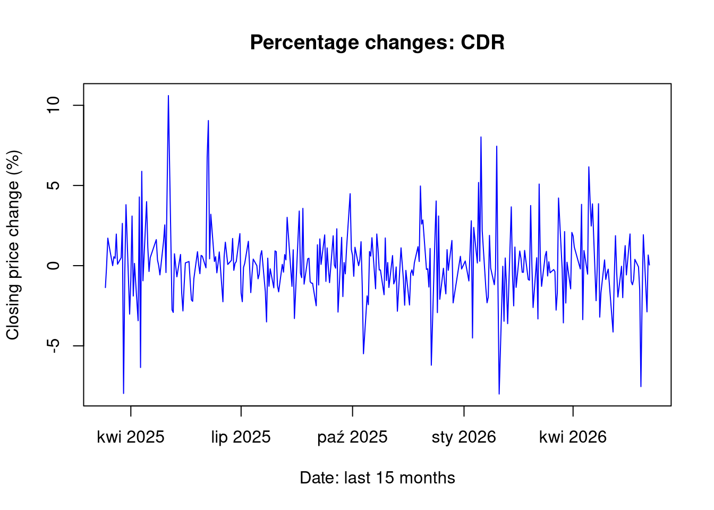
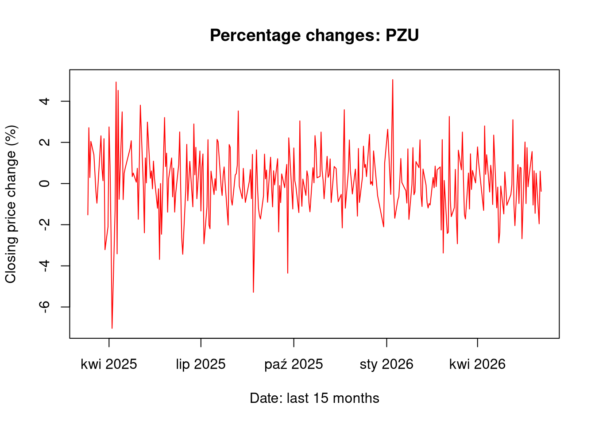
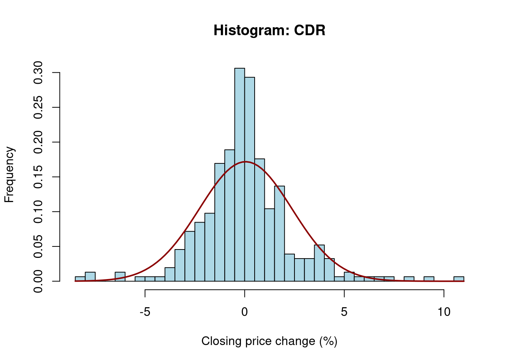
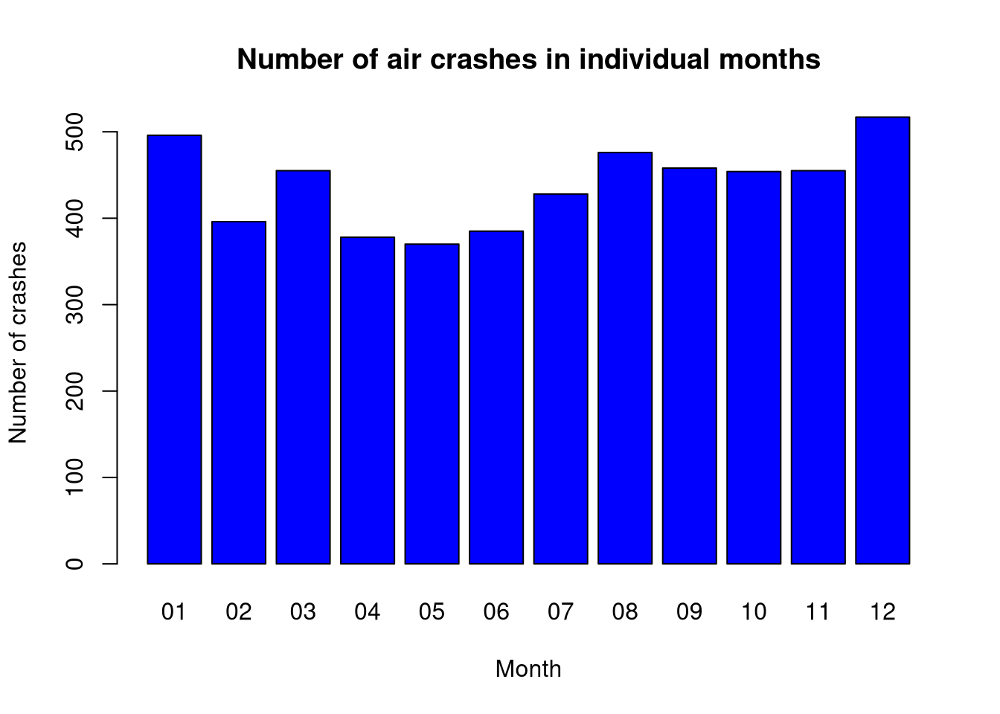
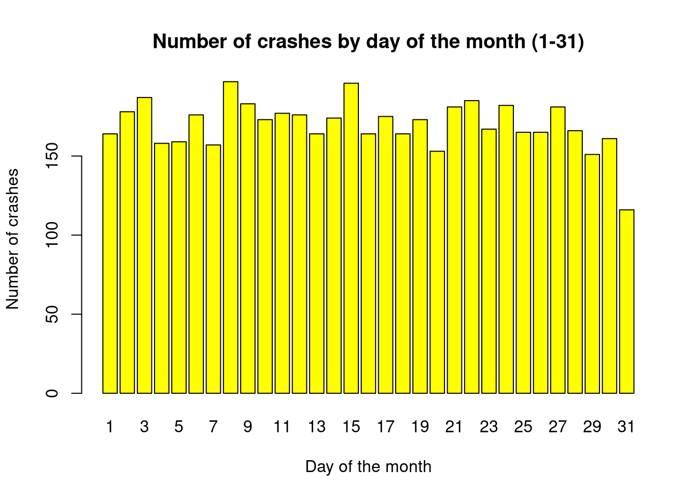
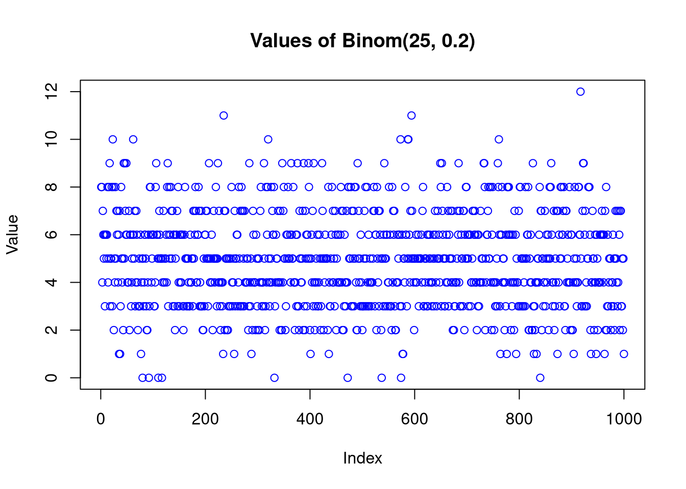
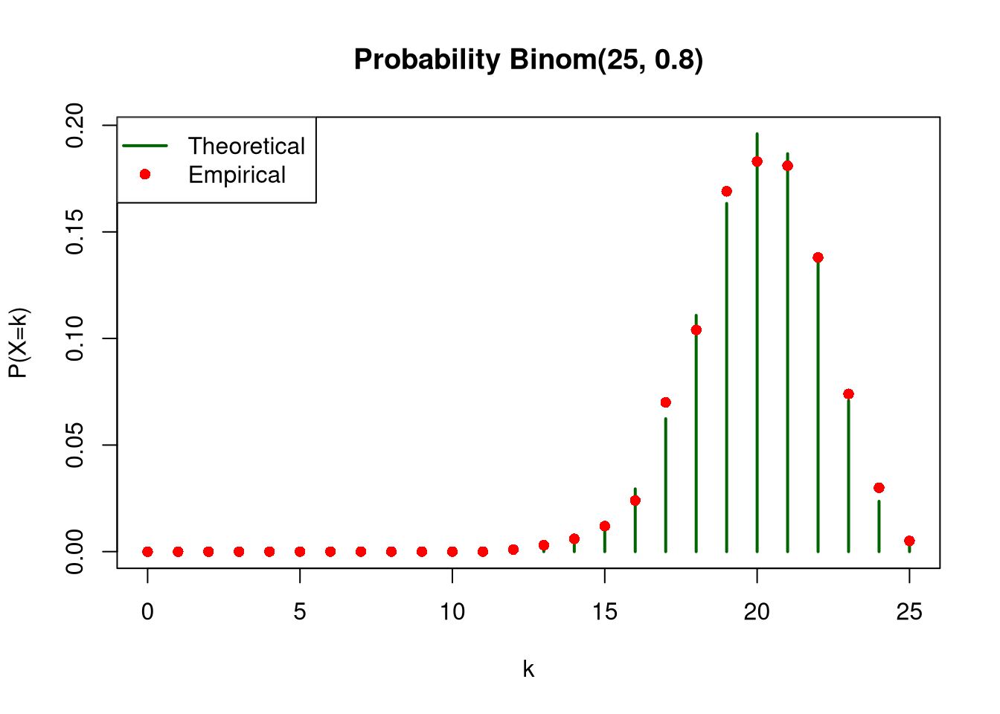
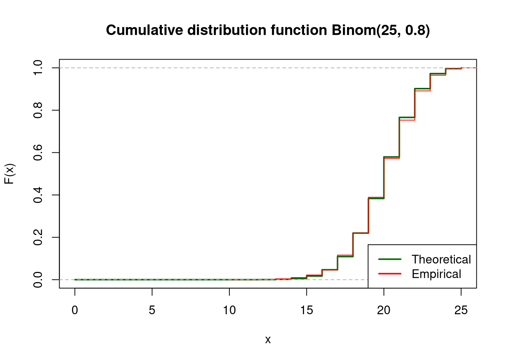
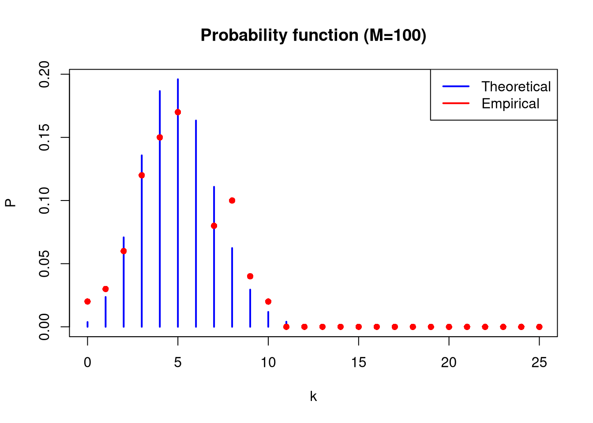
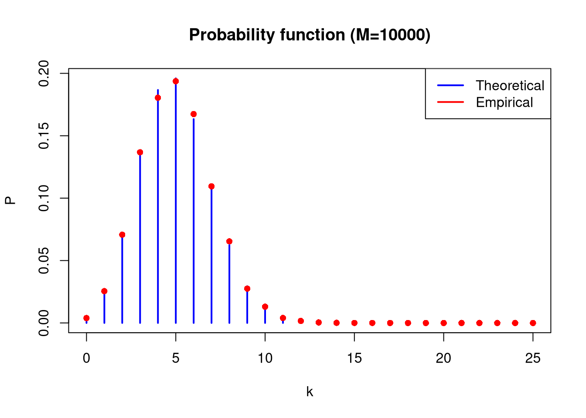

For data from the last 15 months concerning two selected listed companies:
- create charts of the percentage changes of closing prices against the date,
- plot and compare histograms of the percentage changes of closing prices, and add density lines for normal distributions with parameters derived from the data to the charts,
- create one joint figure with box plots of the closing price changes.
plot(df1$Data, df1$PctChange, type ="l", col ="blue", main =paste("Percentage changes:", ticker1),xlab ="Date: last 15 months", ylab ="Closing price change (%)")

1.3 Chart 1b: Price over time: PZU
show/hide
plot(df2$Data, df2$PctChange, type ="l", col ="red", main =paste("Percentage changes:", ticker2),xlab ="Date: last 15 months", ylab ="Closing price change (%)")

1.4 Chart 2a: Histograms and normal distribution CDR
show/hide
hist(df1$PctChange, breaks =30, freq =FALSE, col ="lightblue",main =paste("Histogram:", ticker1), xlab ="Closing price change (%)", ylab ="Frequency")curve(dnorm(x, mean =mean(df1$PctChange), sd =sd(df1$PctChange)), add =TRUE, col ="darkred", lwd =2)

1.5 Chart 2b: Histograms and normal distribution PZU
Analyzing the data of the daily percentage change of the closing price, differences in the range of these changes can be observed. CDR shares proved to be more volatile in the studied period than PZU shares, which is a fairly obvious observation considering the nature of both companies. The normal distribution, in the case of analyzing daily volatility, provides useful information which is the general level of volatility of a given instrument in the studied period, but it does not reflect “unrealized” risk by underestimating extreme events.
2 Analysis of air crash statistics
Create a chart of the number of air crashes in individual:
months of the year (January - December),
days of the month (1-31),
days of the week (weekdays()).
Plot how the following changed over subsequent years:
the number of people who survived the crashes,
the percentage of people (in percent) who survived the crashes.
2.4 Chart 1: Number of crashes in individual months of the year
Months that have 31 days will be burdened with an additional error resulting from the fact that there are more accidents the more days there are in a given time interval.
This could “more” emphasize the “danger” of a month with 31 days (and underestimate it in the case of 28 days).
show/hide
barplot(month_table, main ="Number of air crashes in individual months",col ="blue", xlab ="Month", ylab ="Number of crashes")

2.5 Aggregation: day of the month
show/hide
day_table =table(crashes$Day)
2.6 Chart 2: Number of crashes on individual days of the month (1-31)
In this step, it should be emphasized that the 31st day of the month is unrepresentative because there are ~ half as many 31st days of the month as other days on an annual scale.
show/hide
barplot(day_table, main ="Number of crashes by day of the month (1-31)",col ="yellow", xlab ="Day of the month", ylab ="Number of crashes")

2.7 Aggregation: day of the week
show/hide
day_table =table(crashes$Weekday)
2.8 Chart 3: Number of crashes on individual days of the week (1-7)
show/hide
barplot(day_table, main ="Number of crashes by day of the week (1-7)",col ="red", xlab ="Day of the week", ylab ="Number of crashes")
plot(data_per_year$Year, data_per_year$Survivors,type ="h",col ="blue",main ="Number of survivors of crashes (subsequent years)",xlab ="Year",ylab ="Number of survivors")
For two different sets of binomial distribution parameters (rbinom):
Binom(25,0.2)
Binom(25,0.8)
generate random samples consisting of M = 1000 samples and plot the values of the generated data.
For each of the distributions, plot the empirical and theoretical (use dbinom function) probability functions on one chart, and empirical and theoretical (use pbinom function) cumulative distribution functions on the second chart. In both cases, scale the x-axis from 0 to 25.
3.1 Data generation
show/hide
n <-25M <-1000x_range <-0:25set.seed(42)sample1 <-rbinom(M, size = n, prob =0.2)sample2 <-rbinom(M, size = n, prob =0.8)
3.2 Distribution: Binom(25, 0.2)
3.2.1 Chart for generated values
show/hide
plot(sample1,main ="Values of Binom(25, 0.2)", xlab ="Index", ylab ="Value",col ="blue")

3.2.2 Probability function (empirical vs theoretical)
plot(x_range, theoretical_sample2, type ="h", lwd =2, col ="darkgreen", main ="Probability Binom(25, 0.8)", xlab ="k", ylab ="P(X=k)")points(x_range, empirical_sample2, col ="red", pch =16)legend("topleft", legend =c("Theoretical", "Empirical"), col =c("darkgreen", "red"), lwd =c(2, NA), pch =c(NA, 16))

3.3.3 Cumulative distribution function (empirical vs theoretical)
show/hide
plot(x_range, pbinom(x_range, size = n, prob =0.8), type ="s", lwd =2, col ="darkgreen", main ="Cumulative distribution function Binom(25, 0.8)",xlab ="x", ylab ="F(x)")lines(ecdf(sample2), col ="red",verticals =TRUE, do.points =FALSE)legend("bottomright", legend =c("Theoretical", "Empirical"), col =c("darkgreen", "red"), lwd =2)

4 Impact of sample size on statistical distribution
For the binomial distribution Binom(25, 0.2), generate three random samples consisting of M = 100, 1000 and 10000 samples.
For individual samples, plot empirical and theoretical probability functions, as well as empirical and theoretical cumulative distribution functions. Scale the x-axes from 0 to 25.
In all cases, calculate empirical means and variances. Compare them with each other and with theoretical values for the Binom(25, 0.2) distribution.
plot(x_range, theoretical_prob_mass_func, type ="h", lwd =2, col ="blue", main ="Probability function (M=100)", xlab ="k", ylab ="P")points(x_range, as.numeric(emp_pmf_100), col ="red", pch =16)legend("topright", legend =c("Theoretical", "Empirical"),col =c("blue", "red"), lwd =2)

show/hide
plot(x_range, theoretical_cum_dist_func, type ="s", lwd =2, col ="blue", main ="Cumulative distribution function (M=100)", xlab ="x", ylab ="F")lines(ecdf(sample_100), col ="red", verticals =TRUE, do.points =FALSE)legend("bottomright", legend =c("Theoretical", "Empirical"), col =c("blue", "red"), lwd =2)
plot(x_range, theoretical_prob_mass_func, type ="h", lwd =2, col ="blue", main ="Probability function (M=1000)", xlab ="k", ylab ="P")points(x_range, as.numeric(emp_pmf_1000), col ="red", pch =16)legend("topright", legend =c("Theoretical", "Empirical"), col =c("blue", "red"), lwd =2)
show/hide
plot(x_range, theoretical_cum_dist_func, type ="s", lwd =2, col ="blue", main ="Cumulative distribution function (M=1000)", xlab ="x", ylab ="F")lines(ecdf(sample_1000), col ="red", verticals =TRUE, do.points =FALSE)legend("bottomright", legend =c("Theoretical", "Empirical"), col =c("blue", "red"), lwd =2)
plot(x_range, theoretical_prob_mass_func, type ="h", lwd =2, col ="blue",main ="Probability function (M=10000)", xlab ="k", ylab ="P")points(x_range, as.numeric(emp_pmf_10000), col ="red", pch =16)legend("topright", legend =c("Theoretical", "Empirical"), col =c("blue", "red"), lwd =2)

show/hide
plot(x_range, theoretical_cum_dist_func, type ="s", lwd =2, col ="blue",main ="Cumulative distribution function (M=10000)", xlab ="x", ylab ="F")lines(ecdf(sample_10000), col ="red", verticals =TRUE, do.points =FALSE)legend("bottomright", legend =c("Theoretical", "Empirical"), col =c("blue", "red"), lwd =2)
Type Mean Variance
1 Theory 5.0000 4.000000
2 M = 100 5.1400 4.747879
3 M = 1000 4.8790 4.030389
4 M = 10000 5.0092 4.084924
Based on the table above, it can be observed that as the sample size increases, the empirical mean and variance tend toward the theoretical mean and variance. It should be assumed that a larger sample size will allow for more accurate calculations.